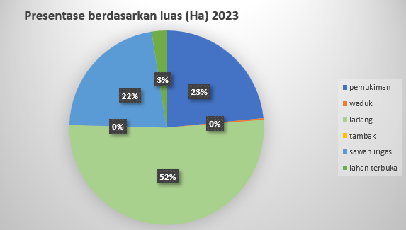

Diagram Perubahan Penggunaan Lahan
Diagram Lingkaran
Di bawah ini merupakan diagram lingkaran yang menunjukkan presentase luas (Ha) penggunaan lahan pada titik survei yang telah kami lakukan di Kecamatan Balongpanggang, Benjeng, dan Kedamean tahun 2023. Pada diagram ini dapat diketahui bahwa perubahan lahan menjadi ladang merupakan yang paling dominan.
